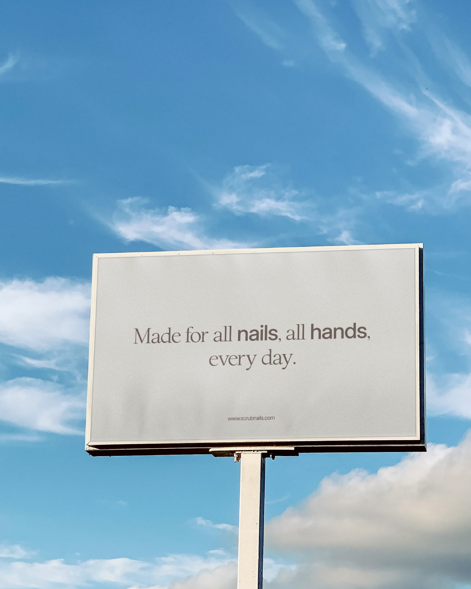
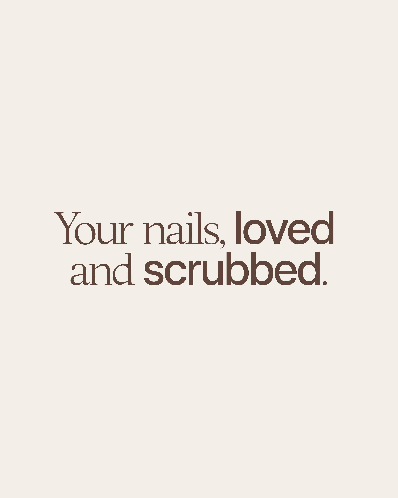
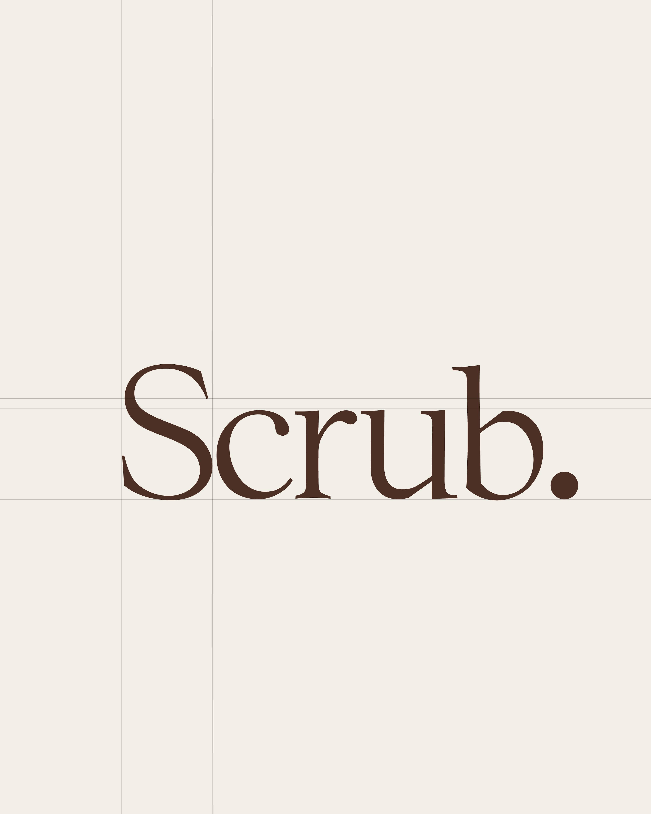

$25 Billion
$25 Billion. That’s how much the global nail care market is projected to hit this year. Yet most brands still treat nails like an afterthought. Scrub (founded by Madeline Silins) saw a different story: people want simple, clean, and smart nail care, products that work and visuals that don’t talk down to them.
We rebuilt the brand from scratch: a wordmark that stands alone, unisex colors that pop but stay sophisticated, and packaging designed for clarity and impact. Fonts and spacing crafted for consistency across digital, print, and social. Scrub isn’t just a product, it’s a system, a routine, a vibe.



